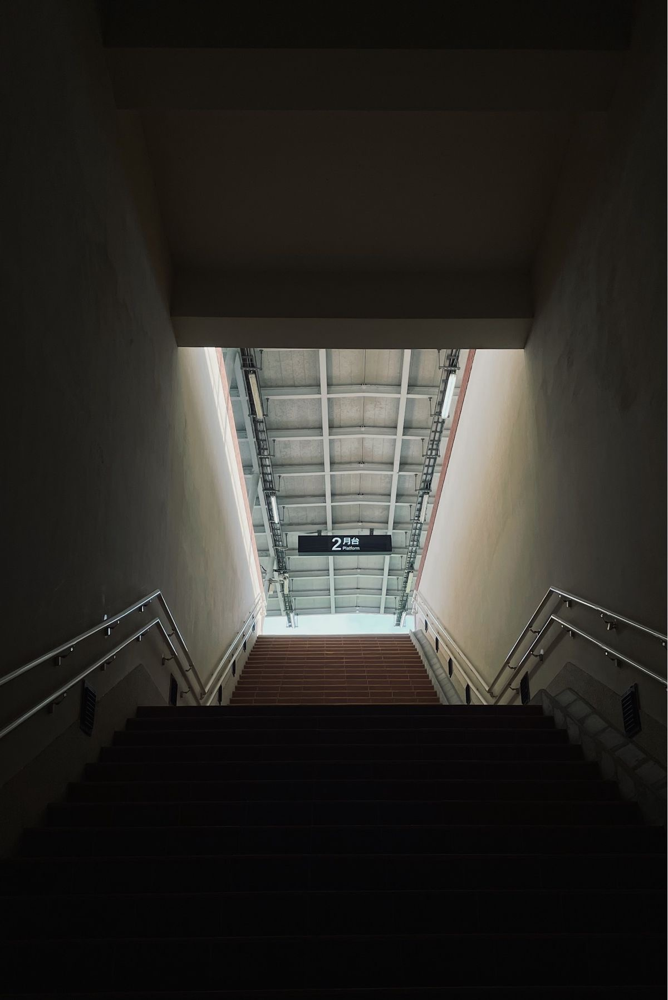
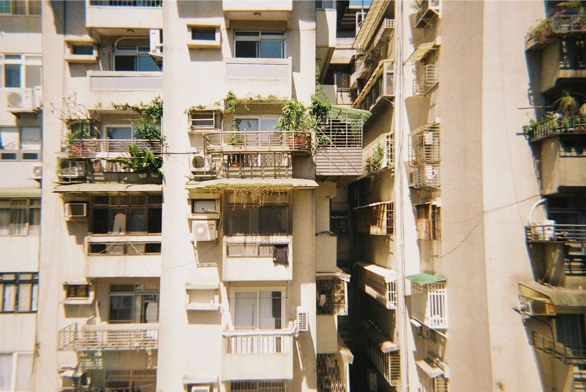

<!DOCTYPE html>
<html lang="zh-TW>
    <head>
        <meta charset="utf-8" />
        <meta name="viewport" content="width=device-width, initial-scale=1, shrink-to-fit=no" />
        <meta name="description" content="這是劉于瑄的Resume" />
        <meta name="author" content="劉于瑄" />
        <title>劉于瑄的自我介紹</title>
        <link rel="icon" type="image/x-icon" href="assets/img/1711447037.ico" />       
        <!-- Font Awesome icons (free version)-->
        <script src="https://use.fontawesome.com/releases/v6.3.0/js/all.js" crossorigin="anonymous"></script>
        <link rel="shortcut icon" href="1711447037.ico"/>
        <link rel="bookmark" href="1711447037.ico"/>
        
        <!-- Google fonts-->
        <link href="https://fonts.googleapis.com/css?family=Saira+Extra+Condensed:500,700" rel="stylesheet" type="text/css" />
        <link href="https://fonts.googleapis.com/css?family=Muli:400,400i,800,800i" rel="stylesheet" type="text/css" />
        <link rel="preconnect" href="https://fonts.googleapis.com">
<link rel="preconnect" href="https://fonts.gstatic.com" crossorigin>
<link href="https://fonts.googleapis.com/css2?family=Noto+Sans+TC:wght@100..900&family=Noto+Serif+TC&display=swap" rel="stylesheet">

        <!-- Core theme CSS (includes Bootstrap)-->
        <link href="css/styles.css" rel="stylesheet" />
        <link href="css/my_style2.css" rel="stylesheet" />
    </head>
    <body id="page-top">
        <!-- Navigation-->
        <nav class="navbar navbar-expand-lg navbar-dark bg-primary fixed-top" id="sideNav">
            <a class="navbar-brand js-scroll-trigger" href="#page-top">
                <span class="d-block d-lg-none">Clarence Taylor</span>
                <span class="d-none d-lg-block"></span>
            </a>
            <button class="navbar-toggler" type="button" data-bs-toggle="collapse" data-bs-target="#navbarResponsive" aria-controls="navbarResponsive" aria-expanded="false" aria-label="Toggle navigation"><span class="navbar-toggler-icon"></span></button>
            <div class="collapse navbar-collapse" id="navbarResponsive">
                <ul class="navbar-nav">
                    <li class="nav-item"><a class="nav-link js-scroll-trigger" href="#about">關於</a></li>
                    <li class="nav-item"><a class="nav-link js-scroll-trigger" href="#experience">工作經歷</a></li>
                    <li class="nav-item"><a class="nav-link js-scroll-trigger" href="#education">學習經歷</a></li>
                    <li class="nav-item"><a class="nav-link js-scroll-trigger" href="#Specialties">專長</a></li>
                    <li class="nav-item"><a class="nav-link js-scroll-trigger" href="#interests">興趣</a></li>
                    <li class="nav-item"><a class="nav-link js-scroll-trigger" href="#Protfolios">作品集</a></li>
                </ul>
            </div>
        </nav>
        <!-- Page Content-->
        <div class="container-fluid p-0">
            <!-- About-->
            <section class="resume-section" id="about">
                <div class="resume-section-content">
                    <h1 class="mb-0">
                        Cynthia
                        <span class="pinkpink">劉于瑄</span>
                    </h1>
                    <h2 class="pinkpink">A110070055</h2>
                    <div class="subheading mb-5">
                        SHU.ICS 世新資傳三甲 | 劉于瑄
                        <a href="mailto:a110070055@mail.shu.edu.tw"> 信箱：a110070055@mail.shu.edu.tw</a>
                    </div>
                    <p class="lead mb-3" style="text-indent: 3em;">大家好我叫劉于瑄也可以叫我小劉<span class="blueblue">我的mbti是infp</span>，我的個性溫柔隨和，富有責任感，善於面對各種挑戰，我具備我具備良好的適應能力與解決問題的能力，能夠在快節奏的工作環境中保持冷靜，對於網頁設計領域對於網頁設計領域充滿熱情對於網頁設計領域充滿了熱情，並且致力於不斷的學習成長。</p>
                        <!-- 插入空間 -->
<div style="margin-top: 30px;"></div>
<div id="blueblue">
    <div class="content">
        <p><span class="blueblue">這是我喜歡的歌嘻嘻跟大家分享<a class="expedu_icon" href="https://youtu.be/BxqYUbNR-c0?si=BBMgrX6T_YPgvQ0n" target="_blank"><i class="fa-solid fa-link"></i></a> </span></p>
        
    </div>
</div>

                                 <!-- 插入空間 -->
<div style="margin-top: 30px;"></div>
                            <div class="social-icons">
                                <a class="social-icon" href="https://www.threads.net/@y29u_" target="_blank"><i class="fa-solid fa-paperclip"></i>
                                <a class="social-icon" href="https://github.com/0929liu/0929liu.github.io"><i class="fab fa-github"></i></a>
                                <a class="social-icon" href="https://www.instagram.com/y29u_/?next=%2Fp%2FBvKeNW_FoFF%2F&hl=cs" target="_blank"><i class="fa-brands fa-square-instagram"></i></a>
                            </div>
                        </div>
                        
                </div>

        
            </section>
            <hr class="m-0" />

            <!-- Experience-->
            <section class="resume-section" id="experience">
                <div class="resume-section-content">
                    <h2 class="mb-5">工作經驗</h2>
                    <div class="d-flex flex-column flex-md-row justify-content-between mb-5">
                        <div class="flex-grow-1">
                            <h3 class="mb-0">貳樓餐廳<a class="expedu_icon" href="https://www.secondfloorcafe.com/" target="_blank"><i class="fa-solid fa-utensils"></i></a></h3>
                            <div class="subheading mb-3"> Staff</div>
                            <p>曾經在某早午餐廳擔任外場工讀，常常不小心把餐點潑客人身上.</p>
                        </div>
                        <div class="flex-shrink-0"><span class="pinkpink">May 2022 - May 2023</span></div>
                    </div>

                    <div class="d-flex flex-column flex-md-row justify-content-between mb-5">
                        <div class="flex-grow-1">
                            <h3 class="mb-0">天下雜誌民調<a class="expedu_icon" href="https://www.cw.com.tw/tag/%E6%B0%91%E8%AA%BF" target="_blank"><i class="fa-solid fa-phone"></i></a></h3>
                            <div class="subheading mb-3">Survey</div>
                            <p>曾在某雜誌社擔任民調工讀，工作內容十分無趣但是個爽缺.</p>
                        </div>
                        <div class="flex-shrink-0"><span class="pinkpink">July 2023 - September 2023</span></div>
                    </div>

                    <div class="d-flex flex-column flex-md-row justify-content-between mb-5">
                        <div class="flex-grow-1">
                            <h3 class="mb-0">大學生<a class="expedu_icon" href="https://ics.wp.shu.edu.tw/" target="_blank"><i class="fa-solid fa-graduation-cap"></i></a></h3>
                            <div class="subheading mb-3">Student</div>
                            <p>目前職業專職學生十分努力，期望準時畢業.</p>
                        </div>
                        <div class="flex-shrink-0"><span class="pinkpink">September 2021  - Now</span></div>
                    </div>
                </div>
            </section>
            <hr class="m-0" />
            <!-- Education-->
            <section class="resume-section" id="education">
                <div class="resume-section-content">
                    <h2 class="mb-5">學習經歷</h2>
                    <div class="d-flex flex-column flex-md-row justify-content-between mb-5">
                        <div class="flex-grow-1">
                            <h3 class="mb-0">世新大學 <a class="expedu_icon" href="https://www.shu.edu.tw/" target="_blank"><i class="fa-solid fa-link"></i></a></h3> 
                            <div class="subheading mb-3">Shih Hsin University</div>
                            <div> ICS (Information and Computer Science).</div>
                            <p>預計明年畢業</p>
                        </div>
                        <div class="flex-shrink-0"><span class="pinkpink">September 2021 - now</span></div>
                    </div>
                    <div class="d-flex flex-column flex-md-row justify-content-between">
                        <div class="flex-grow-1">
                            <h3 class="mb-0">竹南高中 <a class="expedu_icon" href="https://www.cnsh.mlc.edu.tw/home" target="_blank"><i class="fa-solid fa-link"></i></a></h3>
                            <div class="subheading mb-3">National Chunan Senior High School</div>
                            <p>差點沒畢業</p>
                        </div>
                        <div class="flex-shrink-0"><span class="pinkpink">September 2019 - June 2021</span></div>
                    </div>
                </div>           
            </section>


            <hr class="m-0" />
            <!-- 插入空間 -->
<div style="margin-top: 20px;"></div><h4 style="text-align: center;">特殊經歷</h4>

            <table class="cynthiatable">
                <tr>
                    <th>系級</th>
                    <th>社團</th>
                    <th>幹部</th>
                </tr>
              <tr>
                <td>資傳一甲</td>
                <td>吉他社</td>
                <td>社員</td>
              </tr>
              <tr>
                <td>資傳二甲</td>
                <td>無</td>
                <td>無</td>
              </tr>
              <tr>
                <td>資傳三甲</td>
                <td>無</td>
                <td>無</td>
              </tr>
               
               
            </table></div>
            <!-- 插入空間 -->
<div style="margin-top: 20px;"></div>

            <hr class="m-0" />
            <!-- Specialties-->
            <section class="resume-section" id="Specialties">
                <div class="resume-section-content">
                    <h2 class="mb-5">專長</h2>
                    <div class="subheading mb-3">專長描述</div>
                    <p>擁有穩固的程式設計基礎和豐富的前端開發經驗。擅長使用 HTML、CSS、JavaScript 進行網頁開發，熟悉各種前端框架和工具。具備良好的演算法和資料結構知識，能夠用 Java 和 Python 解決各種程式設計問題。熟練運用 Photoshop、Illustrator 和 Procreate 等設計工具進行圖形設計和創作，能夠製作精美的介面和圖形元素。</p>
                        
                        
                        
                    </ul>
                    <div class="subheading mb-3">相關工具</div>
                    <ul class="fa-ul mb-0">
                         <li>
                            <span class="fa-li"><i class="fa-brands fa-html5"></i></span>
                            html
                        </li>
                        <li>
                            <span class="fa-li"><i class="fab fa-css3-alt"></i></span>
                            css
                        </li>
                        <li>
                            <span class="fa-li"><i class="fa-brands fa-java"></i></span>
                            java
                        </li>
                        <li>
                            <span class="fa-li"><i class="fa-brands fa-python"></i></span>
                            python
                        </li>
                        <li>
                            <span class="fa-li"><i class="fa-solid fa-image"></i></span>
                            photoshop
                        </li>
                        <li>
                            <span class="fa-li"><i class="fa-solid fa-pen-fancy"></i></span>
                            illustrator
                        </li>
                        <li>
                            <span class="fa-li"><i class="fa-solid fa-pencil"></i></span>
                            procreate
                        </li>
                    </ul>
                </div>
            </section>
            <hr class="m-0" />
            <!-- Interests-->
            <section class="resume-section" id="interests">
                <div class="resume-section-content">
                    <h2 class="mb-5">興趣</h2> 
                    <p> 我的興趣包括在咖啡廳裡享受寧靜的時光，品嚐各種風味的咖啡，並觀察周圍的人群和環境。我喜歡捕捉生活中的美好時刻，用手機捕捉風景、人物和各種有趣的事物，並將它們記錄下來。此外，閱讀與電影是我生活中不可或缺的一部分，我喜歡閱讀各種類型的書籍，從小說到自我成長和專業領域都有涉獵，閱讀與電影讓我擴展了視野，獲得了新知識和見解。最後，我對繪畫和圖形設計也充滿熱情，我喜歡用各種媒介和工具創作藝術作品，表達我的想法和情感，並享受這個創造的過程。</p>
                    

                </div>
            </section>
            <hr class="m-0" />
           <!-- Protfolios-->
<section class="resume-section" id="Protfolios">
    <div class="resume-section-content">
        <h2 class="mb-5">作品集</h2>
        <div class="photo-container">
            <div class="photo-group">
                
                
                
            </div>
        </div>
        <hr style="clear: both; margin-top: 40px; width: 100%;" />
        <!-- 插入空間 -->
        <div style="margin-top: 20px;"></div><h4 style="text-align: center;">相關作品</h4>
        <ul class="fa-ul mb-0">
            <div><ul class="list-group">
                <li class="list-group-item list-group-item-secondary">VSCO<a href="https://vsco.co/yy29s/gallery" target="_blank">
                    <span class="pinkpink">點擊前往</span>
                </a>
            </li>
                <li class="list-group-item">YOUTUBE <a href="https://studio.youtube.com/channel/UCKdHZEK_jfRC18pDvbcFrCQ/videos/upload?filter=%5B%5D&sort=%7B%22columnType%22%3A%22date%22%2C%22sortOrder%22%3A%22DESCENDING%22%7D" target="_blank">
                        <span class="pinkpink">點擊前往</span>
                    </a>
                </li>
                <li class="list-group-item list-group-item-secondary">PINTEREST <a href="https://www.pinterest.com/cindy910929/_created/" target="_blank">
                    <span class="pinkpink">點擊前往</span>
                </a>
            </li>
               
              </ul></div>
            
                            </div>
</section>

        <!-- Bootstrap core JS-->
        <script src="https://cdn.jsdelivr.net/npm/bootstrap@5.2.3/dist/js/bootstrap.bundle.min.js"></script>
        <!-- Core theme JS-->
        <script src="js/scripts.js"></script>
    </body>
</html>
